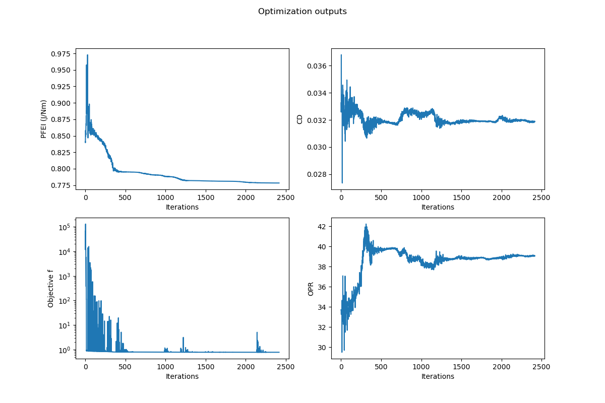

Example for a Multi-variable Optimization

To run a multi-variable optimization run on an aircraft model first determining your design variables. For this example, the design variables are:
- Aspect Ratio:
AR - Cruise Altitude:
Alt - Lift Coefficient:
Cl - Wing Sweep:
sweep - Inner panel taper ratio:
λs - Outer panel taper ratio:
λt - Root thickness to chord:
hboxo - Spanbreak thickness to chord:
hboxs - Break/root cl ratio = cls/clo:
rcls - Tip/root cl ratio = clt/clo:
rclt - Tt4:
Tt4 - High Pressure Compressor Pressure Ratio:
pihc - Fan Pressure ratio:
pif
Initialiation and loading models
Start the script importing TASOPT.jl, Plots, index.inc, NLopt.
# Import modules
using Plots
using TASOPT
# you can optionally define
# const tas = TASOPT
# to use as a shorthand
include("../src/data_structs/index.inc")
# import indices for calling parameters
using NLoptInitialize arrays used for plotting
xarray = []
farray = []
PFEIarray = []
CDarray = []
OPRarray = []
plot_obj = nothing
ft_to_m = 0.3048Load aircraft model and size it to get initial values:
# Load default model
ac = read_aircraft_model(joinpath(TASOPT.__TASOPTroot__, "../example/opt_input.toml"))
# datafile
# Size aircraft once to get initial values
size_aircraft!(ac)Setting Optimization Parameters
This example uses a Nelder Mead optimization aimed towards optimizing for passenger fuel emission index (PFEI) while checking for other constraints.
Set the Upper and Lower limits for all design variables
# DESIGN VARIABLES
# AR Alt(ft) Cl sweep λs λt hboxo hboxs rcls rclt Tt4CR iepihc iepif
lower = [7.0 , 20000.0, 0.40, 10.0, 0.1, 0.1, 0.10, 0.10, 0.1, 0.1, 700.0, 6, 0]
upper = [12.0, 60000.0, 0.65, 40.0, 1.0, 1.0, 0.15, 0.15, 1.4, 1.0, 2000.0, 15, 10]
Set the initial values for all design variables
initial =[
ac.parg[igAR], 33000.0, 0.57, ac.parg[igsweep],
ac.parg[iglambdas], ac.parg[iglambdat], ac.parg[ighboxo],
ac.parg[ighboxs], ac.para[iarcls, ipcruise1,1], ac.para[iarclt, ipcruise1,1], 1587, 11.46, 1.66
]Set initial dx values for all design variables
initial_dx = [ 0.5, 1000.0, 0.05, 0.1, 0.01,0.01,0.01, 0.01, 0.01, 0.01, 100, 0.5,0.2]Set other optimization factors
# Set FTOL
f_tol_rel = 1e-5
# Set Optimization module
opt = NLopt.Opt(:LN_NELDERMEAD, length(initial))
# Other Optimization algorithms are also possible:
# # opt = NLopt.Opt(:LN_BOBYQA, length(initial))
# # opt = NLopt.Opt(:LN_COBYLA, length(initial))
# Set Optimization parameters
opt.lower_bounds = lower
opt.upper_bounds = upper
opt.min_objective = obj
opt.initial_step = initial_dx
opt.ftol_rel = f_tol_relObjective Function
function obj(x, grad)
ac.parg[igAR] = x[1] # Aspect Ratio
ac.para[iaalt, ipcruise1, :] .= x[2] * ft_to_m # Cruise Altitude
ac.para[iaCL, ipclimb1+1:ipdescentn-1, :] .= x[3] # CL
ac.parg[igsweep] = x[4] # Wing sweep
ac.parg[iglambdas] = x[5] #inner_panel_taper_ratio
ac.parg[iglambdat] = x[6] #outer_panel_taper_ratio
ac.parg[ighboxo] = x[7] #root_thickness_to_chord
ac.parg[ighboxs] = x[8] #spanbreak_thickness_to_chord
ac.para[iarcls, ipclimb1+1 : ipdescentn-1, :] .= x[9] # rcls break/root cl ratio = cls/clo
ac.para[iarclt, ipclimb1+1 : ipdescentn-1, :] .= x[10] # rclt tip /root cl ratio = clt/clo
ac.pare[ieTt4, ipcruise1:ipcruise2, :] .= x[11] # Tt4
ac.pare[iepihc, ipclimb1+1 : ipdescentn-1, :] .= x[12] # High Pressure Compressor Pressure Ratio
ac.pare[iepif, ipclimbn, :] .= x[13] #Fan PR
ac.pare[iepilc, :, :] .= 3 # Low Pressure Compressure Pressure Ratio set to 3
# Sizing aircraft with new ac.parameters
TASOPT.size_aircraft!(ac, iter =50, printiter=false)
f = ac.parm[imPFEI]
push!(PFEIarray, ac.parm[imPFEI])
push!(xarray, x)
push!(CDarray, ac.para[iaCD, ipcruise1, 1])
push!(OPRarray, ac.pare[iept3]/ac.pare[iept2])
# Ensure aircraft weight makes sense
WTOmax = ac.parg[igWMTO]
WTO = ac.parm[imWTO,1]
constraint = WTO/WTOmax - 1.0
penfac = 10*ac.parg[igWpay]
f = f + penfac*max(0.0, constraint)^2
# Ensure fuel volume makes sense
Wfmax = ac.parg[igWfmax]
Wf = ac.parg[igWfuel]
constraint = Wf/Wfmax - 1.0
penfac = 10*ac.parg[igWpay]
f = f + penfac*max(0.0, constraint)^2
println("X̄ = $x ⇨ PFEI = $(ac.parm[imPFEI]) f = $f, OPR = $(ac.pare[iept3]/ac.pare[iept2]),")
push!(farray, f)
return f
endRunning the optimization
opt_time = @elapsed (optf, optx, ret) = NLopt.optimize(opt, initial)
numevals = opt.numevals # the number of function evaluations
println("got $optf at $optx after $numevals iterations which took $(opt_time/60) min (returned $ret)")
Plotting resulting data
Plot aircraft model details
figure()
savedir = "./example/optimization/"
if !isdir(savedir)
# If it doesn't exist, create the "optimization" directory
mkdir(savedir)
println("The 'optimization' directory has been created.")
end
figname = "Opt_tutorial_ac_details"
plot_obj = TASOPT.plot_details(ac; plot_obj = plot_obj)
savefig(plot_obj, savedir*figname*".png")Plot optimization outputs over iterations
## Second figure
# Create a 2x2 layout
layout = @layout [a b; c d]
p1 = plot(PFEIarray, xlabel="Iterations", ylabel="PFEI (J/Nm)", title="")
p2 = plot(farray, yscale=:log10, xlabel="Iterations", ylabel="Objective f", title="")
p3 = plot(CDarray, xlabel="Iterations", ylabel="CD", title="")
p4 = plot(OPRarray, xlabel="Iterations", ylabel="OPR", title="")
# Create the plot
p = plot(p1, p2, p3, p4,
layout = layout,
size=(1200, 800),
plot_title="Optimization outputs"
)
# Save the plot
figname2 = "Opt_tutorial_iterations"
savefig(p, savedir * figname2 * ".png")